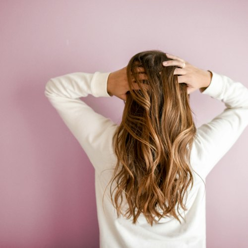
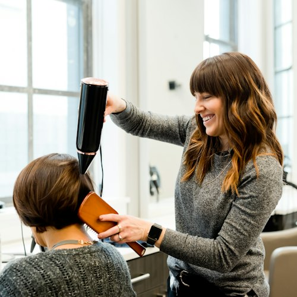
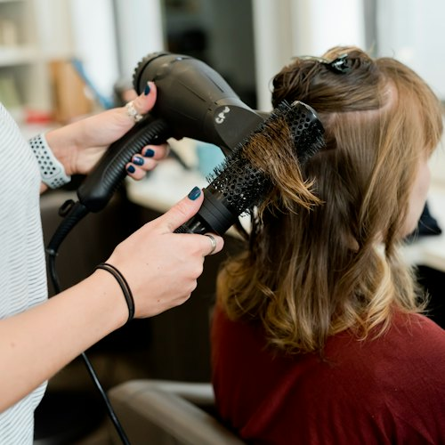
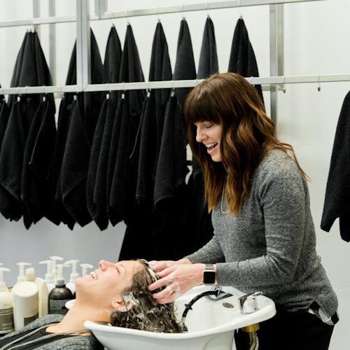

Стрижка и уход по кудрявому методу, сложное окрашивание Davines и укладки. Сообщество парикмахеров, где ценят вашу индивидуальность.

Превращаем непослушный пух в чёткие, оформленные локоны по системе Curly Girl Method.

Актуальные цены и свободное время — в онлайн-записи.
Стрижка и укладка для кудрявых и вьющихся волос. Для женщин и мужчин — можно с корейским уходом.
Записаться →Мягкие переходы на красителях Davines Mask. Сначала — бесплатная консультация и диагностика волос.
Записаться →Смелые цвета для тех, кто хочет изменений — подберём оттенок и технику.
Записаться →Принесите фото — от классики до аниме-образов. Подскажем, что подойдёт именно вам.
Записаться →От повседневной до «Голливуда» — к событию или просто для настроения.
Записаться →Корейские и восстанавливающие уходы — чтобы волосы были плотными и блестящими.
Записаться →В макете цены не указаны — на рабочем сайте подтянем их из вашего прайса.
Работы мастеров — в нашем Telegram-канале. На сайте будут ваши фото.


Не начинаем окрашивание «по картинке» — сначала история волос и прогноз результата.
Знаем, как стричь и укладывать вьющиеся волосы, чтобы они держали форму.
Делимся опытом и подбираем мастера под ваш запрос.
Ковенский переулок, 14 — рядом с метро.